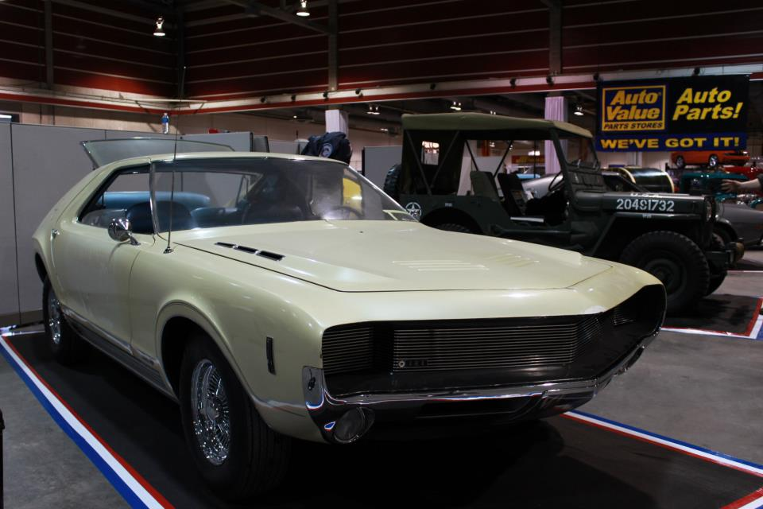

1966 AMC

1966 AMC AMX/1 Vignale Prototype, in a way you can see where the Javelin's body-lines came from. This car is a running and driving concept car, with working hideaway headlights, "Ramble Seats," automatic closing windows when the doors are opened, hidden windshield wipers, and dual gas tanks.
Ford Mustang 1970
As Lee Iacocca's assistant general manager and chief engineer, Donald N. Frey was the head engineer for the T-5 project—supervising the overall development of the car in a record 18 months[19]—while Iacocca himself championed the project as Ford Division general manager. The T-5 prototype was a two-seat, mid-mounted engine roadster. This vehicle employed the German Ford Taunus V4 engine and was very similar in appearance to the much later Pontiac Fiero.
Dodge Charger 1960
First launched in 1966 the Dodge Charger was an instant hit. With the fastback fad of the mid 1960's the new Charger's were a streamlined Coronet with rich interior and plenty of power. From the get-go the Dodge Charger could be had with the all mighty 426 Hemi, and with the Muscle Car Market in full explosion Mopar fans rushed with enthusiasm to purchase the new Charger.
MERCEDES BENZ 770
Easily recognizable by its 4-door body, the Cabriolet D was truly a boss's car with comfortable seats and luxurious upholstery. Sharing the same features as its differently-lettered siblings, the D type was as good as any of them both by looks and the seat of the pants. Performance and handling came in a visually appealing package with a meticulously finished body mounted on a chassis driven forward by an elegant set of wheels with a choice of wooden spoke or metal disc patterns. Driving pleasure was however hampered by the car's gas-guzzling engine that gulped as much as 1 gallon once very 7.8 miles
Cadillac Eldorado
For Cadillac, the front-wheel-drive 1967-1969 Cadillac Eldorado was a revolutionary development, as important as the 1915 V-8, the 1930 Sixteen, the 1938 Sixty Special, and the 1949 V-8. It was the first Cadillac with FWD; moreover, it was an entirely new approach to the Eldorado's marketplace. Its technology wasn't new. Oldsmobile, traditionally the "experimental division" of General Motors, had launched the Toronado the year before. But the Eldos' styling was quite different from the Toronado's.
Chrysler 1966

In 1955, Chrysler introduced the C300. The 'C' stood for coupe and the 300 was the horsepower rating of the original Hemi engine equipped with , two four barrel carbs, solid lifters, special manifolds, and enlarged dual exhausts. This vehicle gave the Chrysler Corporation a performance and sporty image, a much needed persona in this post World War II era. Many European manufacturers, such as Jaguar and MG, had introduced high powered, small, responsive sports cars. American manufacturers countered with the Chevrolet Corvette and the Ford Thunderbird. The Chrysler 300 was a performance car with a contemporary 'Forward Look' designed by ex-Studebaker stylist Virgil Exner.